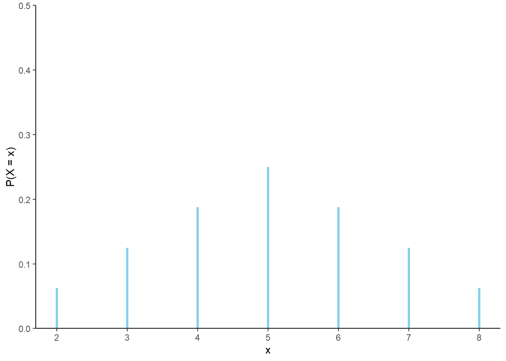
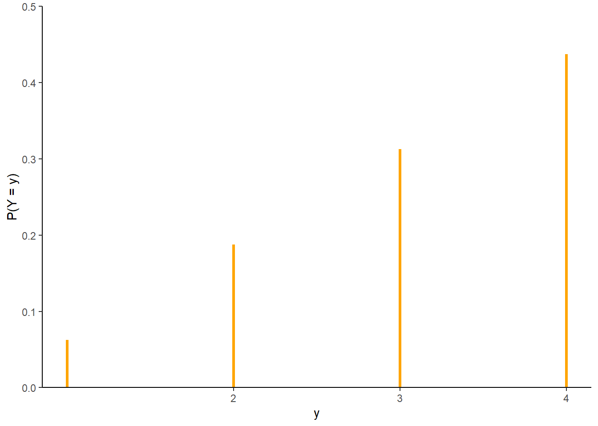
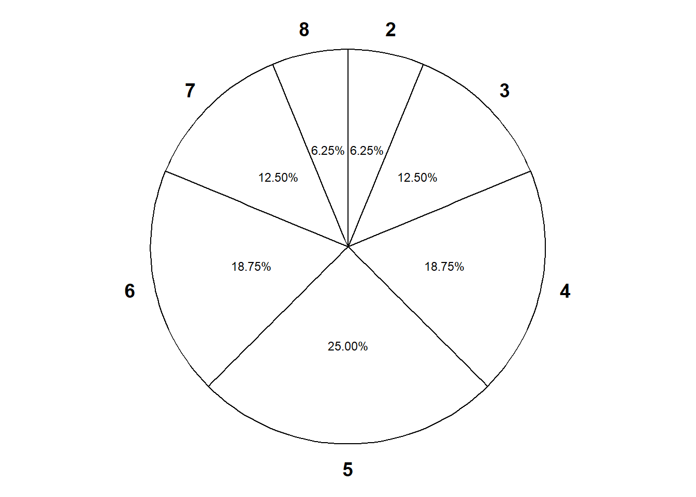
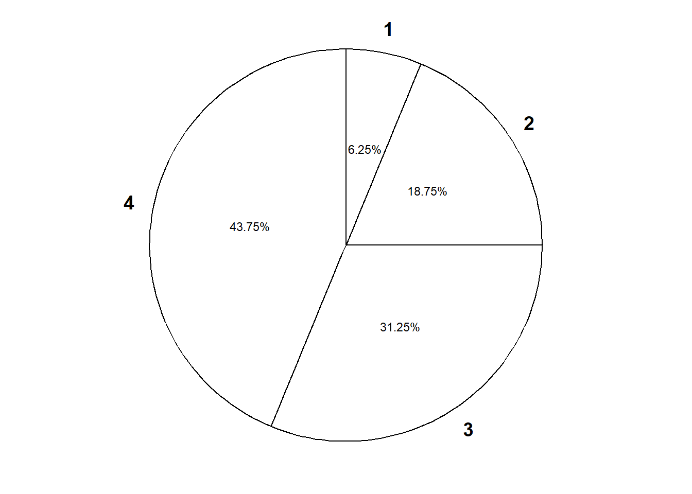
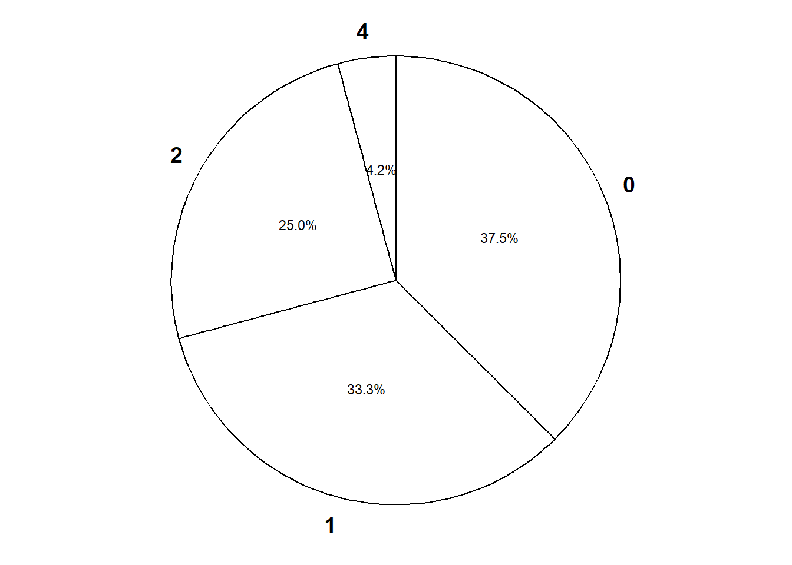
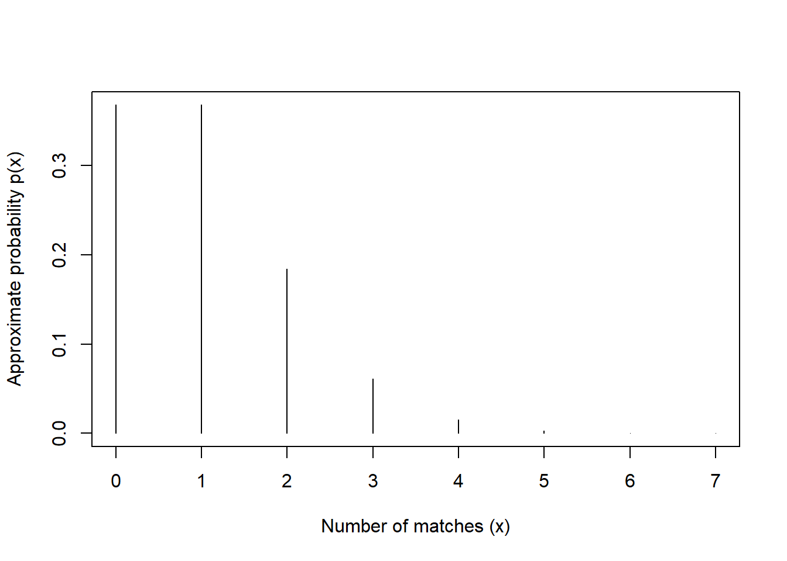
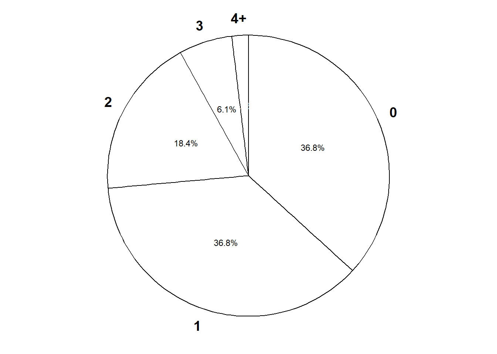

| Outcome (First roll, second roll) | X (sum) | Y (max) |
|---|---|---|
| (1, 1) | 2 | 1 |
| (1, 2) | 3 | 2 |
| (1, 3) | 4 | 3 |
| (1, 4) | 5 | 4 |
| (2, 1) | 3 | 2 |
| (2, 2) | 4 | 2 |
| (2, 3) | 5 | 3 |
| (2, 4) | 6 | 4 |
| (3, 1) | 4 | 3 |
| (3, 2) | 5 | 3 |
| (3, 3) | 6 | 3 |
| (3, 4) | 7 | 4 |
| (4, 1) | 5 | 4 |
| (4, 2) | 6 | 4 |
| (4, 3) | 7 | 4 |
| (4, 4) | 8 | 4 |
5 Discrete Random Variables
- Roughly, a random variable assigns a number measuring some quantity of interest to each outcome of a random phenomenon.
- Mathematically, a random variable (RV) \(X\) is a function that takes an outcome in the sample space as input and returns a real number as output
- The random variable itself is typically denoted with a capital letter (\(X\)); possible values of that random variable are denoted with lower case letters (\(x\)).
- Think of the capital letter \(X\) as a label standing in for a formula like “the number of heads in 4 flips of a coin” and
- \(x\) as a dummy variable standing in for a particular value like 3.
- Discrete random variables take at most countably many possible values (e.g., \(0, 1, 2, \ldots\)). They are often counting variables (e.g., the number of Heads in 10 coin flips).
- Continuous random variables can take any real value in some interval (e.g., \([0, 1]\), \([0,\infty)\), \((-\infty, \infty)\).). That is, continuous random variables can take uncountably many different values. Continuous random variables are often measurement variables (e.g., height, weight, income).
- A function of a random variable is also a random variable: if \(X\) is a RV then so is \(g(X)\)
- Sums and products, etc., of random variables defined on the same sample space are random variables. If\(X\) and \(Y\) are RVs defined on the same sample space then so are \(X+Y\), \(X-Y\), \(XY\)
- If the sample space outcomes are represented by rows in a spreadsheet, then random variables correspond to columns.
- Expressions like \(X=x\) or \(\{X=x\}\) represent events: for which outcomes is the value of the random variable \(X\) equal to the value \(x\). (Remember, if the sample space outcomes are represented by rows in a spreadsheet, then an event corresponds to a subset of rows (outcomes) that satisfies some criteria.)
- The (probability) distribution of a collection of random variables identifies the possible values that the random variables can take and their relative likelihoods.
- We will see many ways of describing a distribution, depending on how many random variables are involved and their types (discrete or continuous).
Example 5.1 Roll a four-sided die twice, and record the result of each roll in sequence. Let \(X\) be the sum of the two dice, and let \(Y\) be the larger of the two rolls (or the common value if both rolls are the same). Table 5.1 represents the possible outcomes and the values of the random variables \(X\) and \(Y\). Assume the die is fair and the rolls are independent.
- Identify the event \(\{X = 4\}\) and compute its probability. Then interpret the probability both as a long relative frequency and as a relative likelihood.
- Construct a table and plot of \(\text{P}(X = x)\) for each possible value \(x\) of \(X\).
- Construct a table and plot of \(\text{P}(Y = y)\) for each possible value \(y\) of \(Y\).
| x | P(X=x) |
|---|---|
| 2 | 0.0625 |
| 3 | 0.1250 |
| 4 | 0.1875 |
| 5 | 0.2500 |
| 6 | 0.1875 |
| 7 | 0.1250 |
| 8 | 0.0625 |
| y | P(Y=y) |
|---|---|
| 1 | 0.0625 |
| 2 | 0.1875 |
| 3 | 0.3125 |
| 4 | 0.4375 |


5.1 Simulating from a Distribution
Example 5.2 Continuing Example 5.1.
- Describe how you could simulate a single value of \(Y\).
- Construct a spinner (like from a kids game) to represent the distribution of \(Y\).
- Describe another way to simulate a single value of \(Y\).
- Describe how you could use simulation to approximate the distribution of \(Y\).


- Don’t confuse a random variable with its distribution!
- A random variable measures a numerical quantity which depends on the outcome of a random phenomenon
- The distribution of a random variable specifies the long run pattern of variation of values of the random variable over many repetitions of the underlying random phenomenon.
- Any marginal distribution can be represented by a single spinner (like from a kids game).
- In principle, there are always two ways of simulating a value \(x\) of a random variable \(X\).
- Simulate from the probability space. Simulate an outcome \(\omega\) from the underlying probability space and set \(x = X(\omega)\).
- Simulate from the distribution. Construct a spinner corresponding to the distribution of \(X\) and spin it once to generate \(x\).
- The second method requires that the distribution of \(X\) is known. However, as we will see in many examples, it is common to specify the distribution of a random variable directly without defining the underlying probability space.
5.2 Probability Mass Functions
- The probability distribution of a single discrete random variable \(X\) is often displayed in a table containing the probability of the event \(\{X=x\}\) for each possible value \(x\).
- In some cases, a distribution has a “formulaic” shape. For a discrete random variable \(X\), the probability mass function (pmf) \(p_X\) expresses \(\text{P}(X=x)\) as a function of \(x\): \(p_X(x) = \text{P}(X = x)\).
- Be sure to specify the possible values of the random variable!
- Certain common distributions have special names and properties.
Example 5.3 Continuing Example 5.1.
- Verify that the pmf of \(X\) is \[
p_X(x) = \frac{4 - |x - 5|}{16}, \qquad x = 2, 3, \ldots, 8
\]
- Verify that the pmf of \(Y\) is \[
p_Y(y) = \frac{2y - 1}{16}, \qquad y = 1, 2, 3, 4
\]
5.3 Matching Problem
The “matching problem” involves \(n\) distincts objects labeled \(1, \ldots, n\) which are placed in \(n\) distinct boxes labeled \(1, \ldots, n\), with exactly one object placed in each box. Suppose the objects are placed in the boxes uniformly at random, so that any possible arrangement is equally likely. Let \(X\) be the number of matches, that is, the number of objects for which their label matches the label of the box in which they are placed.
| Spot 1 | Spot 2 | Spot 3 | Spot 4 | X (number of matches) |
|---|---|---|---|---|
| 1 | 2 | 3 | 4 | |
| 1 | 2 | 4 | 3 | |
| 1 | 3 | 2 | 4 | |
| 1 | 3 | 4 | 2 | |
| 1 | 4 | 2 | 3 | |
| 1 | 4 | 3 | 2 | |
| 2 | 1 | 3 | 4 | |
| 2 | 1 | 4 | 3 | |
| 2 | 3 | 1 | 4 | |
| 2 | 3 | 4 | 1 | |
| 2 | 4 | 1 | 3 | |
| 2 | 4 | 3 | 1 | |
| 3 | 1 | 2 | 4 | |
| 3 | 1 | 4 | 2 | |
| 3 | 2 | 1 | 4 | |
| 3 | 2 | 4 | 1 | |
| 3 | 4 | 1 | 2 | |
| 3 | 4 | 2 | 1 | |
| 4 | 1 | 2 | 3 | |
| 4 | 1 | 3 | 2 | |
| 4 | 2 | 1 | 3 | |
| 4 | 2 | 3 | 1 | |
| 4 | 3 | 1 | 2 | |
| 4 | 3 | 2 | 1 |
Example 5.4 Consider the matching problem with \(n=4\). There are \(4!=24\) possible outcomes, displayed in Table 5.3.
- Complete Table 5.3 to identify the value of \(X\) for each outcome.
- Identify the event \(\{X = 0\}\) and compute its probability. Then interpret the probability both as a long relative frequency and as a relative likelihood.
- Construct a table, plot, and spinner representing the distribution of \(X\).
| x | P(X=x) |
|---|---|
| 0 | 0.3750 |
| 1 | 0.3333 |
| 2 | 0.2500 |
| 4 | 0.0417 |

Example 5.5 Now consider the matching problem with general \(n\). Finding the distribution of \(X\) by enumerating the \(n!\) possible outcomes as we did for \(n=4\) is not feasible for general \(n\). But we can approximate the distribution of \(X\) with simulation. Simulation shows that the distribution of the number of matches \(X\) is approximately the same for all \(n\) (unless \(n\) is very small, i.e., \(n\le 5\)). In particular, for any \(n\), the probability mass function of \(X\) is approximately \[ p_X(x) = \frac{e^{-1}}{x!}, \qquad x = 0, 1, 2, \ldots \]
- Use this pmf to approximate the probability of at least one match, and compare to the simulation results for general \(n\).
- Interpret the probability both as a long relative frequency and as a relative likelihood.
- Construct a table, plot, and spinner corresponding to the above pmf. Compare to the simulation results for general \(n\).
| x | p_x |
|---|---|
| 0 | 0.367879 |
| 1 | 0.367879 |
| 2 | 0.183940 |
| 3 | 0.061313 |
| 4 | 0.015328 |
| 5 | 0.003066 |
| 6 | 0.000511 |
| 7 | 0.000073 |

